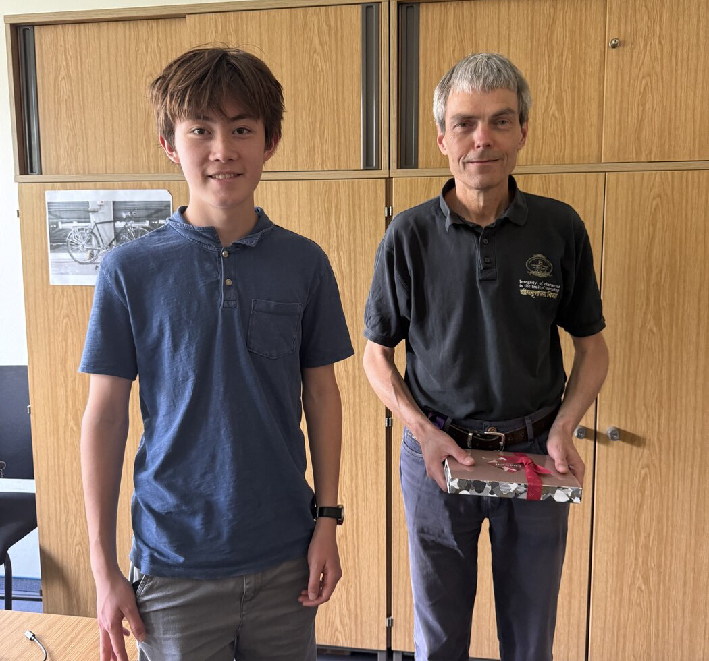

I'm a junior at Sidwell Friends School in Washington, D.C. I'm primarily interested in the digital humanities, computational linguistics, history, and data science. Most of the work on this site comes from applying computational methods to think about questions in language and history including but not limited to undeciphered scripts, reconstructed languages, and archives that are too large to read one document at a time.
Lately that has mostly meant the Indus Script, Dravidian historical linguistics, Republican-era Chinese newspapers, and archival history in Washington, D.C. Parts of that work took shape at TU Berlin and the New York Historical Society, and in 2025 an Emergent Ventures grant helped me support my research on the Indus script.
Outside of these projects, I run cross-country and track, play violin (with a
passion for klezmer), and spend more time than I should listening to ska and
rocksteady records and Woody Guthrie. I've also been studying Yiddish over the
past couple of years and have been compiling a collection of my favorite
Yiddish curses and expressions!

Current work
-
A computational project on which Indus signs behave more like syllabic signs and which behave more like logograms. It includes one published paper and a follow-up now under review at Digital Applications in Archaeology and Cultural Heritage.
-
A separate Indus project under the mentorship of Rajesh Rao. It asks what recurring sign clusters are doing semantically, using only statistical and distributional evidence and no linguistic assumptions about the script.
-
A summer spent building a structured Proto-Dravidian lexical database at TU Berlin with Andreas Fuls and Martin Kada. One chapter from that work is forthcoming in spring 2026.
-
Archival research, GIS mapping, and public-facing digital work for Mount Zion and Female Union Band Cemetery. MZION/FUBS map → Wilberforce map →
-
A newspaper-based study of how written Chinese changed between 1910 and 1945. Under review at the International Journal of Digital Humanities. Research Square preprint →
Selected publications
-
Identifying Candidate Syllabic Sign Pairs in the Indus Script: A Computational Analysis of High-Frequency Sign Pairs
-
Computational Analysis of the Indus Script: Identifying Sign Functions in Logo-Syllabic Writing Systems
-
The Evolution of Written Chinese (1910–1945): A Computational Study of Newspapers